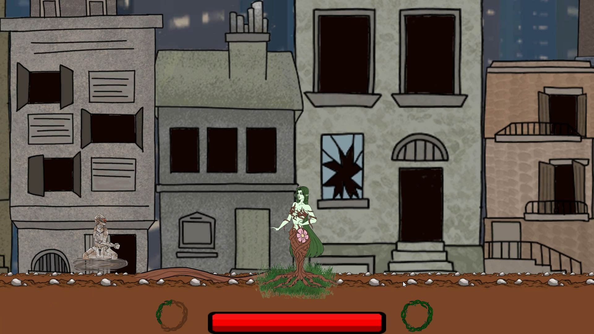
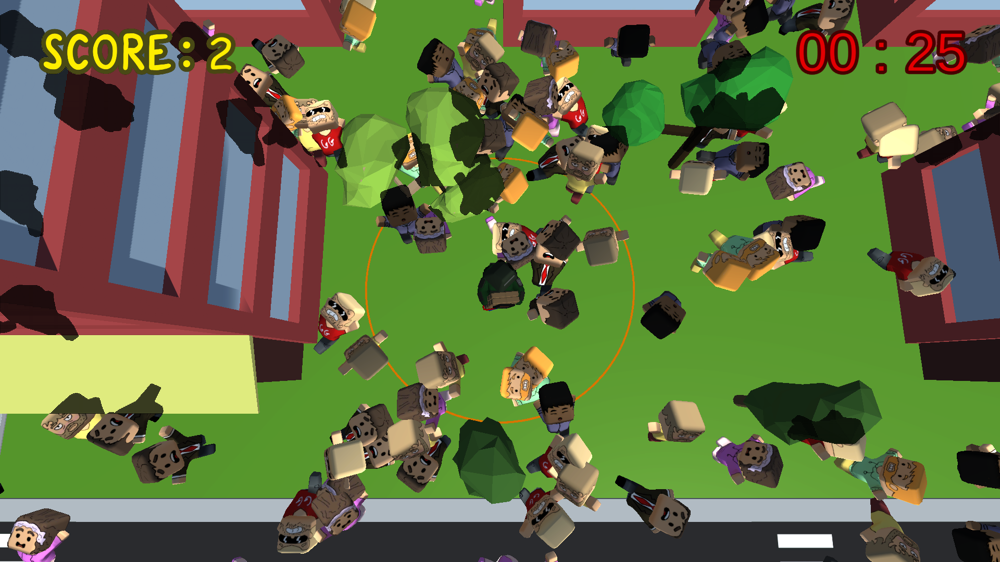

Durant mon parcours Académique et personnel, j’ai eu l’opportunité de travailler sur plusieurs
projets utilisant Unreal Engine, Unity et sans frameworks en c++.
Ces expériences m’ont permis de permis de constituer une base technique solide
tout en découvrant différents aspects du développement de jeux vidéo.
En parallèle, j'ai participé à des game jams et réalisé des projets personnels,
ce qui me pousse à apprendre de nouveaux outils, essayer des nouveaux concepts et devenir plus polyvalent.
Curieux, autonome et investi, je sais également m’intégrer efficacement au sein d’une équipe.
J'ai une grande capacité d'apprentissage ce qui me permet de progresser rapidement.
Je m’efforce de comprendre en profondeur les technologies que j’utilise afin de proposer des solutions
pertinentes et créatives.
Skills
Projets

Global Game Jam : Last Hope
Une Game Jam réalisé pendant 48H sous le thème "Root". Ce jeu à été réalisé avec 6 personnes sous Unity.
En tant que programmer j'ai touché à tout les aspects du jeu (Gameplay, Intégration d'animation et d'assets, ... )
En savoir plus ...

Game Jam Ynov : An Explosive Day
Une Game Jam réalisé dans le cadre académique pendant 48H sous le thème "Root". Ce jeu à été réalisé avec 6 personnes sous Unity.
J'étais parmis les deux programmeurs et j'ai fait le UI, la gestion de l'explosion, de la bombe, de la foule, et optimization des entités ...
En savoir plus ...
Projet Final Ynov: Where are you ?Puzzle game multijoueur réalisé en 1 an comme projet de fin d'année de Mastère 5.
Développé sous UE4 en collaboration avec des artistes et un game designer de la même école. J'étais en charge du développement du multijoueur,
d'aspects du gameplay ...
En savoir plus ...
Global Game Jam : Last Hope
Une Game Jam réalisé pendant 48H sous le thème "Root". Ce jeu à été réalisé avec 6 personnes sous Unity.
En tant que programmer j'ai touché à tout les aspects du jeu (Gameplay, Intégration d'animation et d'assets, ... )
En savoir plus ...
Game Jam Ynov : An Explosive Day
Une Game Jam réalisé dans le cadre académique pendant 48H sous le thème "Root". Ce jeu à été réalisé avec 6 personnes sous Unity.
J'étais parmis les deux programmeurs et j'ai fait le UI, la gestion de l'explosion, de la bombe, de la foule, et optimization des entités...
En savoir plus ...
Projet Final Ynov: Where are you ?Puzzle game multijoueur réalisé en 1 an comme projet de fin d'année de Mastère 5.
Développé sous UE4 en collaboration avec des artistes et un game designer de la même école. J'étais en charge du développement du multijoueur,
d'aspects du gameplay ...